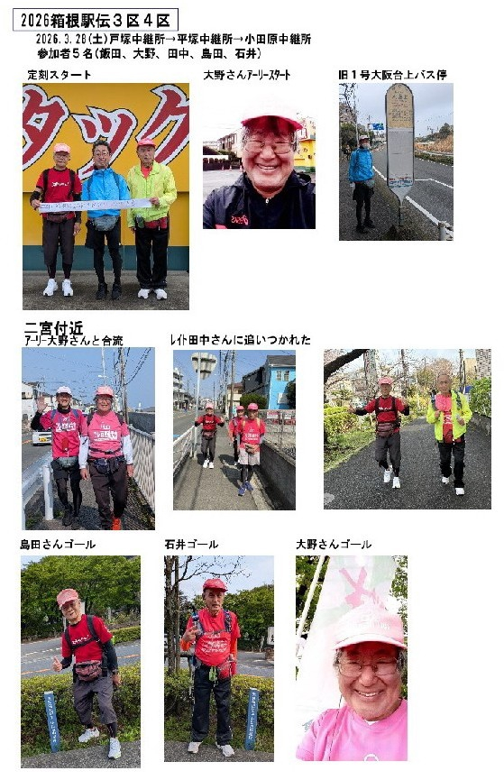

2026-03-28 06:19:39
2026年3月28日(土) 戸塚～小田原、天候＝晴れ、気温22℃、担当_石井
| No | 白鷺 | 氏名 | 着目 | タイム | フル百 |
|---|---|---|---|---|---|
| 1 | 98 | 田中 国貞 | フル | 7:49:25 | 888 |
| 2 | 401 | 飯田 和好 | フル | 8:31:08 | 881 |
| 3 | 340 | 島田 八十美 | フル | 8:52:07 | 830 |
| 4 | 317 | 石井 功 | フル | 8:52:07 | 817 |
| 5 | 28 | 大野 清美 | フル | 10:31:01 | 532 |
阿部さん、ビール、ケーキ、煎餅等の刺し入れありがとうございました。
